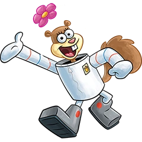
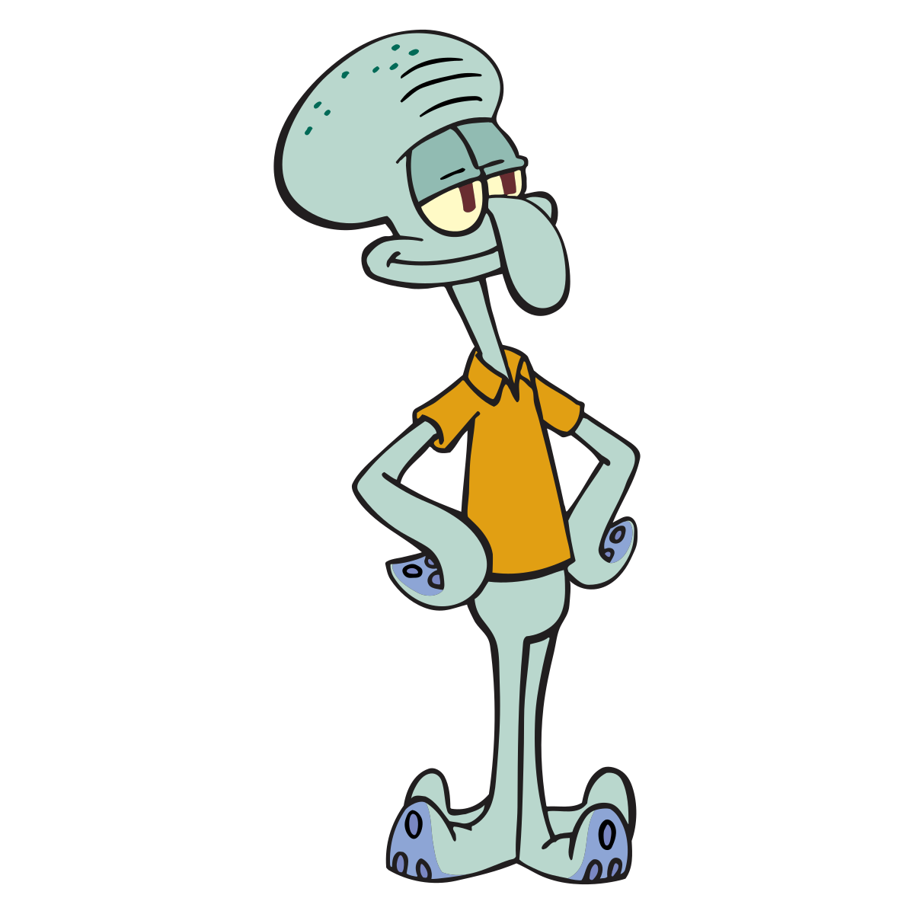

Welcome to my SpongeBob fanpage!
By Juhi

SpongeBob has been on Nickelodeon for over 20 years! Some of its characters include Sandy, Squidward, and of course we cannot forget Patrick!
Sandy!

Sandy is a character on SpongeBob. She lives inside of an air-filled dome because she cannot breathe underwater.
Squidward!

Squidward is an octopus who lives in SpongeBob's world. Every time Patrick and SpongeBob see him, he is always grouchy.
Patrick!

Patrick is SpongeBob's best friend! He is a pink, goofy, and funny starfish.
This is not the official SpongeBob fanpage. Sorry :(